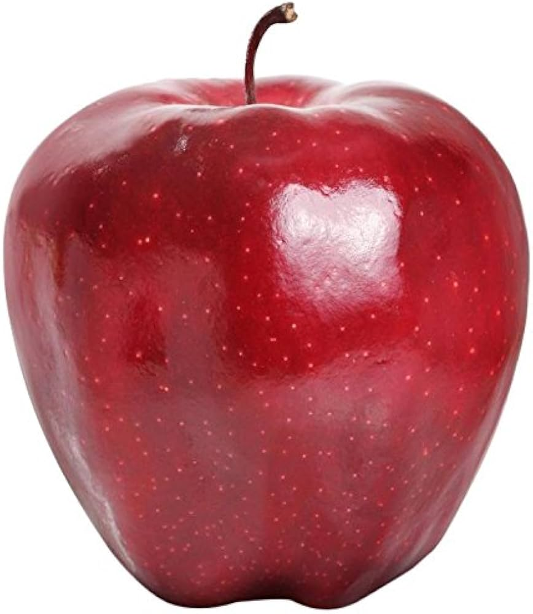
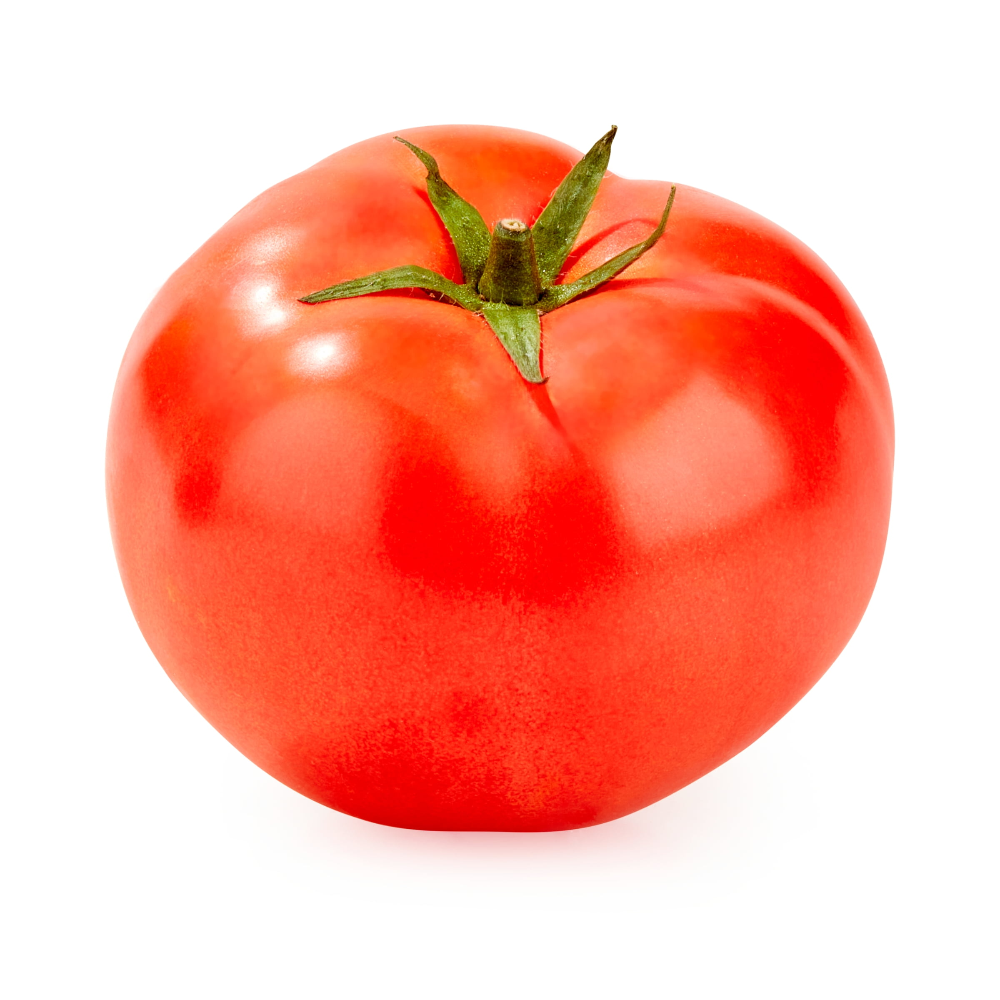
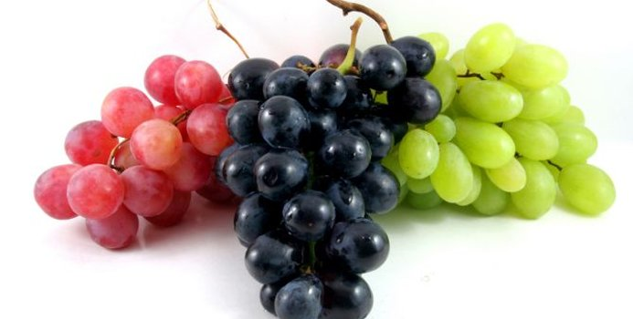
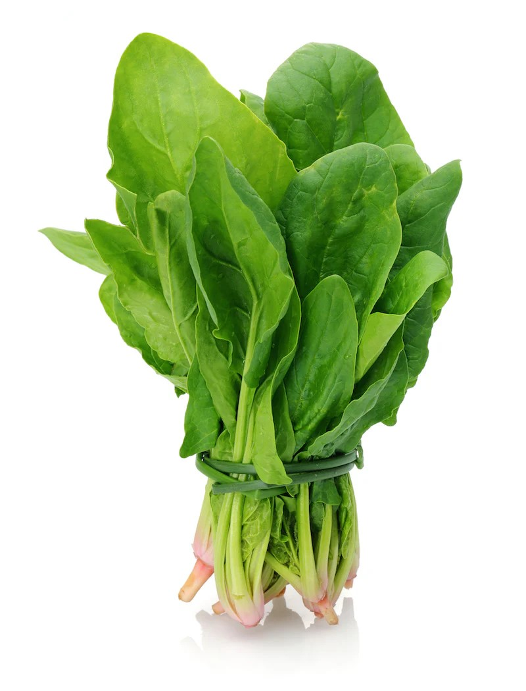
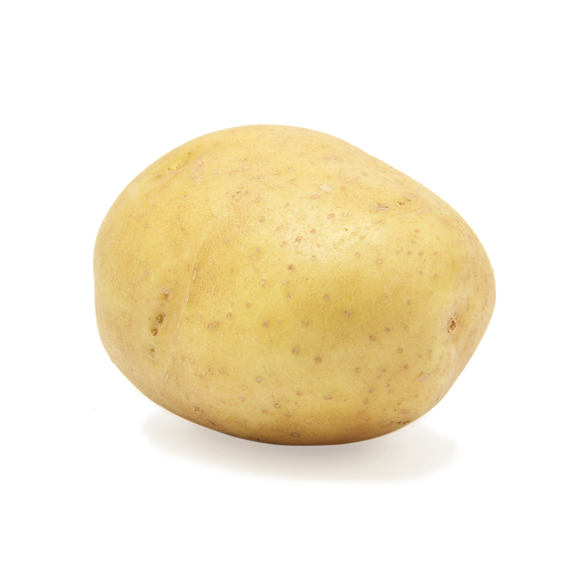
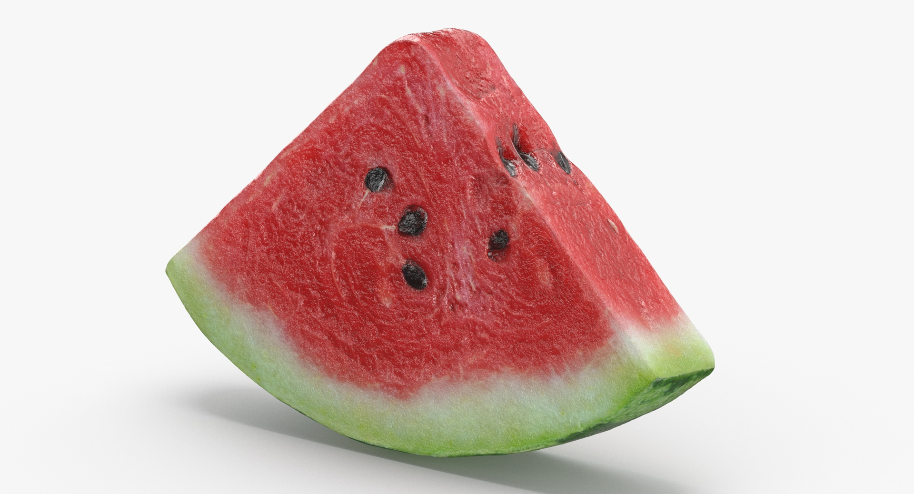
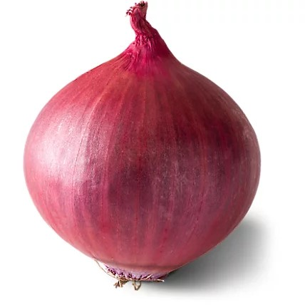

| Name |
Weight/Volume |
Description |
Ingredients |
Images |
| Apple |
1 piece (150g) |
A crisp and juicy fruit that is rich in fiber and vitamins. Apples are a great snack for maintaining overall health. They come in various colors and flavors. |
Fresh apple |
 |
| Banana |
1 piece (120g) |
A sweet and soft fruit loaded with potassium and energy. Bananas are perfect for a quick snack or adding to smoothies. They are also known to aid digestion. |
Fresh banana |
|
| Carrot |
1 piece (100g) |
A crunchy and nutritious root vegetable rich in beta-carotene. Carrots promote good vision and overall health. They can be eaten raw or cooked. |
Fresh carrot |
 |
| Tomato |
1 piece (150g) |
A juicy and tangy vegetable often used in cooking and salads. Tomatoes are packed with antioxidants and vitamins. They enhance the flavor of many dishes. |
Fresh tomato |
 |
| Orange |
1 piece (130g) |
A citrus fruit rich in vitamin C, known for its refreshing and tangy taste. Oranges boost immunity and improve skin health. They are often juiced or eaten fresh. |
Fresh orange |
 |
| Grapes |
100g |
Small, sweet, and juicy fruits that are great for snacking. Grapes contain antioxidants that support heart health. They come in green, red, and black varieties. |
Fresh grapes |
 |
| Spinach |
1 bunch (200g) |
A leafy green vegetable packed with iron and nutrients. Spinach strengthens the immune system and supports bone health. It is commonly used in salads and cooking. |
Fresh spinach |
 |
| Potato |
1 piece (200g) |
A versatile root vegetable used in various dishes worldwide. Potatoes provide carbohydrates for energy and are rich in fiber. They can be boiled, fried, or baked. |
Fresh potato |
 |
| Watermelon |
1 slice (250g) |
A hydrating and refreshing fruit high in water content. Watermelons are perfect for hot weather and provide vitamins and antioxidants. They have a naturally sweet taste. |
Fresh watermelon |
 |
| Onion |
1 piece (100g) |
A pungent vegetable that enhances the flavor of dishes. Onions contain natural compounds with health benefits, including boosting immunity. They can be eaten raw or cooked. |
Fresh onion |
 |